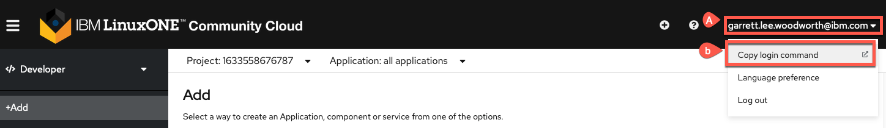
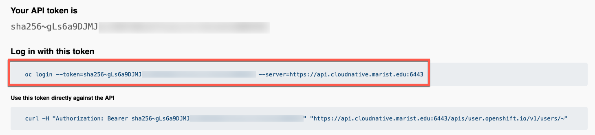
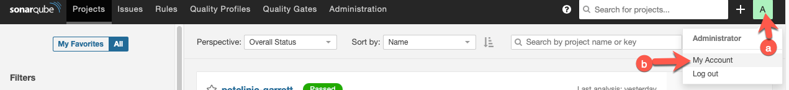
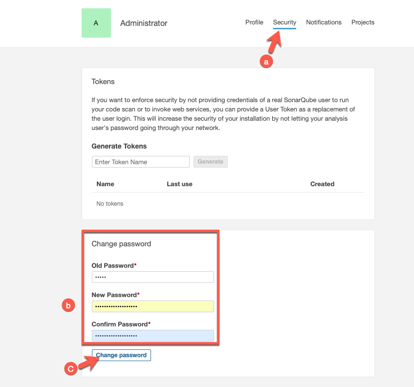
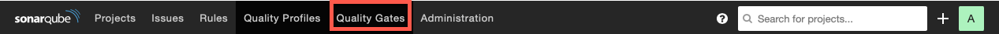
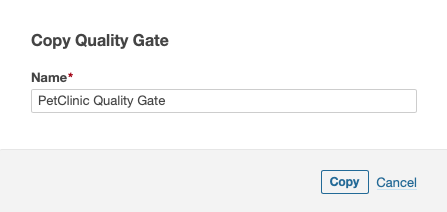
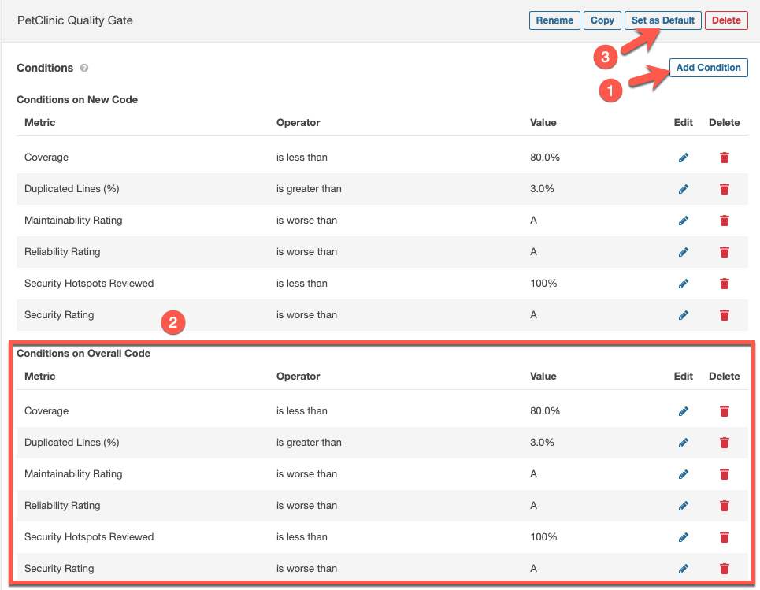

15. Setting up SonarQube server in OpenShift¶
15.1 Sign up for necessary accounts¶
-
Get a 2nd OpenShift cluster trial (in addition to the one you got for the regular lab, using a different email) here.
Note
Within 48 hours after you register, be sure to "Activate your account or entitlement" following the instructions in the follow-on email sent to the email address you specified during registration.
-
Sign up for IBM Z Container Registry trial using this link.
15.2 Access OpenShift Cluster¶
Note
This should be a different OpenShift cluster than the one used for the main lab sections due to resource constraints.
-
Code for the project
Please fork the code to your GitHub repository by clicking here. If this fails, you likely already have a forked version of the repository from the lab. If so, go to your fork and use that in the next step.
-
Clone the git repository to your local computer
a. Get the link from GitHub using the
Codebutton on your forked repository and theHTTPStab.
b. Perform the clone locally in a terminal window using git clone + the link you copied such as
git clone https://github.com/siler23/spring-petclinic.gitfor the example ina.above. -
Log into OpenShift in a terminal window locally.
a. Click on your username in the upper right hand of the LinuxONE Community Cloud OpenShift UI.
b. Click
Copy Login command
c. In the new window that opens click
Display Tokento generate a login token.Note
You may be prompted to enter your LinuxONE Community Cloud username and password again.

d. Copy the login command.

e. Use the login command in your terminal to login to your OpenShift project.

Note
Login token has been blurred in image for security purposes.
15.3 Create OpenShift resources for SonarQube server¶
-
Create a Kubernetes (OpenShift) secret for the IBM Z Container Registry using your API Key
oc create secret docker-registry z-container-registry --docker-username=iamapikey --docker-server='icr.io' --docker-password='YOUR_API_KEY'Note
Please replace
YOUR_API_KEYwith your API Key for the IBM Z container registry. -
Create OpenShift resources from PetClinic git repo you cloned.
a. Change into the directory where you cloned your petclinic repo in step 2b of 15.2 Access OpenShift Cluster.
b. Apply the SonarQube server files to your project from the main directory of the cloned GitHub fork using the following command:
oc apply -f ocp-files/sonarqube-serverExample
deployment.apps/sonarqube created service/sonarqube created route.route.openshift.io/sonarqube created persistentvolumeclaim/sonarqube-data created
15.4 Access SonarQube server¶
-
Wait for the SonarQube server to come up and then access it at its route you can find the route via the oc command line tool in your logged in namespace using:
hostname="$(oc get route sonarqube -o jsonpath='{.spec.host}')" && echo "https://${hostname}"Note
You can also use the user interface (UI) of your project.
-
Log into SonarQube server with default username/password of
admin/admin
15.5 Change Admin password¶
-
Access your account settings

-
Click the
Aicon in the upper right hand corner -
Choose
My Accountfrom the droopdown menu
-
-
Change admin password

-
Choose the
Securitytab at the top of the page -
Enter your old password of
adminand choose + confirm a new password -
Click
Change Password
-
15.6 Create PetClinic Default SonarQube Quality Gate¶
-
Go to the
Quality Gatestab.
-
Copy BUILT-IN Sonar way quality gate
-
Choose to copy the gate

-
Choose a name for your new gate 
-
-
Add conditions for
Overall Code
-
Click
Add Conditionfor each Condition in the image above (the same ones used forNew Code). -
Create each condition for
Overall Codeto match the image above. -
Click
Set as Defaultto set thePetClinic Quality Gateas the default quality gate so that it will be used for the new projects created by users in the SonarQube section of the lab.
-
15.7 Summary¶
You have set up a SonarQube and are now ready to enjoy the SonarQube section of the lab using your own SonarQube server. Congratulations!!!
Note
Use the URL you used to access the SonarQube server as your SonarQube url in the SonarQube section.